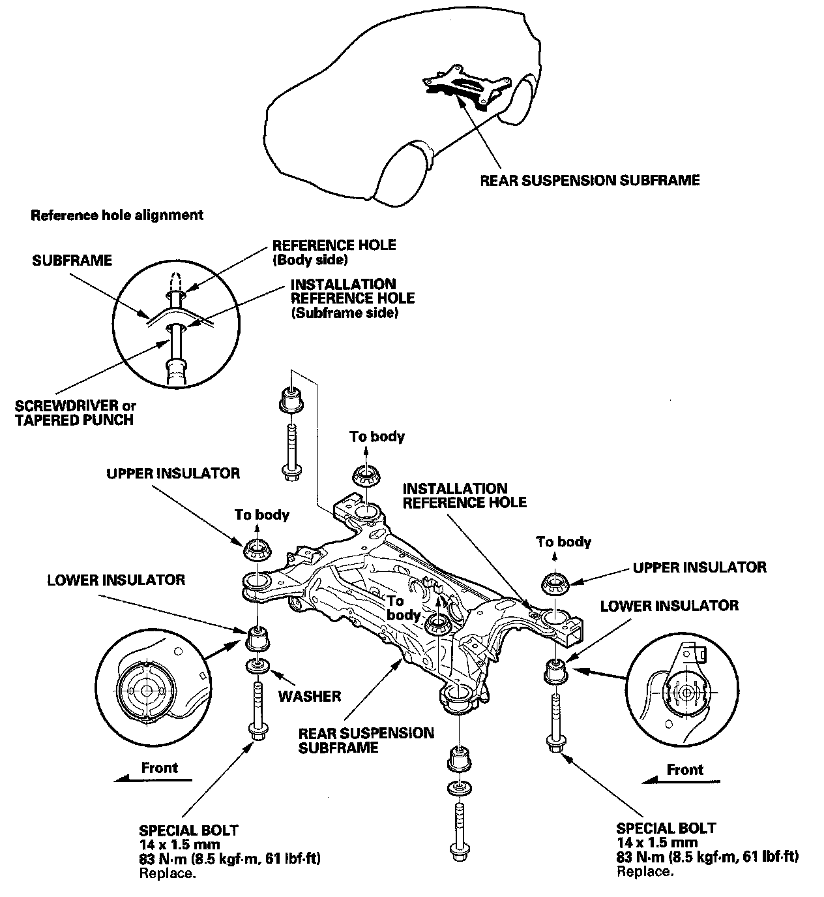

Rear Subframe: Service and Repair
Rear Subframe Torque
NOTE:
- When installing, align both installation reference holes in the subframe with the reference holes in the body using a screwdriver or tapered punch as a guide.
- After removing the subframe mounting bolts, be sure to replace them with new ones.